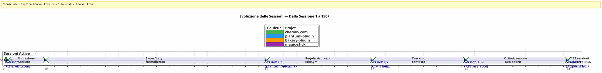
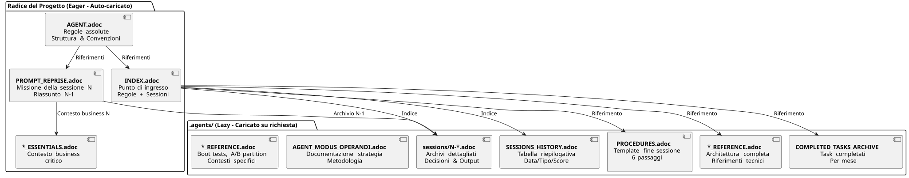

Governare un Agente IA con AsciiDoc: La Mia Strategia Eager/Lazy per Sessioni Opencode senza Perdita di Contesto
Pubblicato il 24 April 2026
Riassunto
Quando si lavora con un agente IA come Opencode su progetti complessi in più sessioni, si affronta un problema fondamentale:la fuga di contesto. L’agente non si ricorda della sessione precedente. Tutto ciò che gli è stato spiegato — l’architettura, le convenzioni, lo stato del backlog — è perso. Ricostruire questo contesto ad ogni sessione è costoso, lento e fonte di errore.
Questo articolo espone la strategia artigianale che ho costruito per risolvere questo problema: un sistema di governance persistente basato su file AsciiDoc, con una dicotomiaAnsioso/Pigroper ottimizzare il consumo del token di contesto, e unaprocedura di fine sessione imprescindibileper assicurare la continuità.
La Scena : Lunedì 21 Aprile, 9:00
Riapro Opencode per riprendere il mio plugin Gradle`plantuml-plugin`. Ieri sera ho passato tre ore a discutere con l’agente dell’architettura del pool di chiavi API — rotazione round-robin, gestione delle quote, fallback automatico. Questa mattina l’agente mi guarda con gli occhi di un pesce rosso.
_ — Buongiorno, sono il tuo assistente Opencode. Come posso aiutarti oggi ? _
Nessun — Ah sì, il pool di chiavi API, eravamo alla struttura YAML. Nessun — Attenzione,PlantumlManager`è un oggetto singleton Kotlin, non una classe. No — No, abbiamo deciso ieri che`SyntaxValidationResult`rimaneva una classe sealed annidata in`PlantumlService.
Tutto è da rifare. O meglio: tutto è da riesporre. Passerò i primi venti minuti della mia sessione a ricostruire un contesto che l’agente ha già avuto tra le mani ieri. Venti minuti di token bruciati. Venti minuti in cui potrei programmare, ma invece faccio un’attività didattica obbligatoria.
Non è un bug di Opencode. È la natura stessa dei LLM conversazionali: tra due sessioni, la memoria di lavoro ècompletamente cancellata. L’agente non si ricorda della missione precedente, delle decisioni prese, delle trappole individuate, del codice che abbiamo scritto insieme.
L’ho vissuto decine di volte. Su quattro progetti simultanei. Con sessioni che si susseguono per settimane. Ho calcolato: in media,dal 30% al 40% del tempo di sessioneera dedicato a recontestualizzare l’agente. Alla sessione 87 del progetto`plantuml-plugin`, ho ceduto. Non potevo più permettermi di spiegare per la decima volta che`AttemptEntry`è une data class top-level in`DiagramProcessor.kt`.
Mi serviva un sistema. Non un hack. Una vera governance.
La Genesi: dal caos al metodo
Le prime sessioni: L’età delle tenebre
Il mio primo progetto con Opencode,plantuml-plugin, è partito senza alcuna governance. Pongo una domanda, l’agente risponde, iteriamo, la sessione termina, e il giorno successivo ricominciamo da zero. Era la sessione 1, poi la 2, poi la 3… fino alla sessione 62 in cui mi rendo conto di aver perso ore cumulate a riesporre la stessa architettura.
Alla sessione 62, i numeri ci sono :198 test unitari passano, 42 test funzionali validati, il plugin funziona. Ma il costo cognitivo è insopportabile. Ogni nuova sessione inizia con un monologo di venti minuti sulla struttura del progetto.
L’episodio del site.yml distrutto (Sessione 2, bakery-plugin)
Il metodo nasce anche da una catastrofe. Sul progetto`bakery-gradle`, alla session 2, chiedo all’agente di modificare il file`site.yml`. L’agente, senza verificare se il file è versionato, fa un`Write`completo che sovrascrive il contenuto. Risultato: i token reali (chiavi API Firebase, segreti di distribuzione) sono sostituiti da placeholder fittizi. Il file non era in git — era in`.gitignore`per proteggere i segreti.
Senza salvataggio. Senza`git restore`possibile. Sono bloccato. Devo ricostruire manualmente il file di configurazione, ritrovare i token nei miei gestori di password, rimettere tutto insieme.
È da questa frustrazione che nasce laRegola Assoluta 1b</think>
_ Non schiacciare maiun file di configurazione con un`Write`completo quando un`Edit`parziale basta.(No output - no translatable French text was provided in the query beyond instructional meta-text)dei valori sensibili mediante valori fittizi.Verifica git check-ignore e `git ls-filesprima di qualsiasi modifica. _
Questa regola, oggi incisa nel marmo di tutti i miei file`AGENT.adoc` et `INDEX.adoc`in quattro progetti, è nata da un errore reale che mi è costato un’ora di lavoro manuale.
La migrazione Markdown → AsciiDoc (Sessione 1, cheroliv.com)
Il 25 aprile 2026, su`cheroliv.com`, prendo una decisione radicale: convertire l’intera governance di Markdown verso AsciiDoc. Non è estetico. È funzionale. AsciiDoc offre una struttura semantica che i LLM leggono meglio: sezioni gerarchiche, tabelle tipizzate, avvisi (NOTE, WARNING, CAUTION), attributi di documento leggibili dalla macchina.
La sessione 1 di`cheroliv.com`formalizza la struttura :
-
Conversione di`AGENTS.md` en
AGENT.adoc -
Creazione degli agenti specializzati :`CODER.adoc`,
SCRUM_MASTER.adoc,PLANTUML_DESIGNER.adoc -
Creazione della struttura Eager/Lazy :`INDEX.adoc`,
SESSIONS_HISTORY.adoc,AGENT_SESSION_MANAGER.adoc,SESSION_CHECKLIST.adoc,PROCEDURES.adoc
Un solo commit :`90975e9 refactor: migrate agent governance from Markdown to AsciiDoc`. E il sito continua a funzionare.

La timeline sopra illustra la progression reale. Il punto di svolta è la sessione 87: è lì che la frustrazione della ri‑contestualizzazione ripetuta supera la soglia di tolleranza, e il metodo Eager/Lazy smette di essere un’idea per diventare un obbligo.
La Strategia : Eager/Lazy in Profondità
Filosofia: Cache informatica applicata alla cognizione
Il mio approccio si ispira direttamente alla gestione della cache informatica. Tutto ciò che ècritico e frequentemente utilizzatodeve essere immediatamente accessibile (Ardente). Tutto ciò che ècontestuale o voluminosodeve essere caricato su richiesta (pigro).
Eager (Cruscotto) |
Lazy (Manuale del proprietario) |
taglia |
< 100 righe, < 10k token |
Illimitato, dettagliato |
Caricamento |
Auto, all’inizio della sessione |
Su richiesta dell’agente |
Contenuto |
Regole assolute, missione corrente, stato critico |
Archivio delle sessioni, storia completa, procedure dettagliate, riferimenti tecnici |
Ruolo |
Orientare immediatamente l’agente |
Rispondere alle domande di contesto profondo |
I file Eager : Il Cruscotto
Questi file vivono nella radice di ogni progetto e vengono caricati automaticamente dall’agente all’inizio di ogni sessione. Essi formano ilcruscotto-- informazione critica, immediatamente accessibile.

AGENT.adoc-- Il file principale. Sul`cheroliv.com`, ha 200 righe e contiene :
-
Le regole assolute del progetto (nessun commit senza permesso, nessun`rm`senza conferma)
-
La struttura del progetto e le convenzioni di codice
-
I comandi essenziali (
./gradlew serve,./gradlew test) -
Le epiche e il backlog del prodotto (storie utente priorizzate)
-
I criteri di qualità trasversali (accessibilità, responsive, compatibilità)
su`bakery-plugin`, la Regola 0 è diversa :./gradlew -q publishToMavenLocal` obbligatorio dopo ogni modifica del codice sorgente. Perché testare il plugin senza ripubblicare il JAR locale mi ha fatto perdere un’ora a eseguire il debug di un codice che non era ancora stato impacchettato.
PROMPT_REPRISE.adoc-- La missione della sessione in corso. Aggiornato alla fine di ogni sessione, contiene :
-
Il numero di sessione e la missione prioritaria
-
Il riassunto della sessione precedente (ciò che è stato fatto, ciò che resta da fare)
-
I criteri di accettazione della sessione corrente
-
I promemoria tecnici specifici
.agents/INDEX.adoc-- Il punto di ingresso. Riassume le regole assolute, le sessioni recenti, e soprattutto ilportafoglio di progettigestiti con la stessa metodologia. Ad oggi, cinque progetti vi figurano :
----
----
----
| magic-stick | Session 23 | SCRIPT_VERIFICATION.adoc | 2026-04-27 |
| bakery-gradle | Session 11 | TEST_COVERAGE_ANALYSIS | 2026-04-27 |
| cheroliv.com | Session 9 | TEST_COVERAGE_ANALYSIS | 2026-04-27 |
| plantuml-gradle| Session 133| TEST_COVERAGE_ANALYSIS | 2026-04-23 |
| jhipster-gradle-plugins | Session 1 | TEST_COVERAGE_ANALYSIS | 2026-04-28 |
----
**`*_ESSENTIALS.adoc`** -- Un'aggiunta recente (Sessione 109, plantuml-plugin) per ottimizzare ulteriormente il contesto Eager. Invece di caricare 200 righe di contesto di business sul pool di chiavi API, carico 50 righe dell'essenziale, e le altre 150 righe rimangono in LAZY in`*_REFERENCE.adoc`.
Risultato misurato : passaggio di**~25k tokens EAGER a ~10k tokens**(guadagno del 60%). L'agente non ha più bisogno di promemoria energivori.
==== L'anello mancante : `opencode.json
Devo confessarvi una cosa che ho quasi dimenticato di documentare. Sopra tutti questi file .adoc, c'è un minuscolo file JSON senza il quale nulla funziona. Si chiama`opencode.json`e fa sei linee. Letteralmente sei linee.
[source,json]
----
{
"$schema": "https://opencode.ai/config.json",
"instructions": [
"AGENT.adoc"
]
}
----
Questo è il file che dice a Opencode : « All'avvio, carica`AGENT.adoc`automaticamente.» Senza di lui, l'agente è una pagina bianca esattamente come lo descrivevo all'inizio dell'articolo. Con lui, l'agente ha già tra le mani le regole assolute, l'architettura del progetto e i comandi essenziali — anche prima che io dica buongiorno.
Ho scoperto per caso l'importanza di questo file. Su`bakery-plugin`, non esisteva. Mi chiedevo perché l'agente era sistematicamente più « smarrito » su questo progetto che sugli altri. Le regole assolute erano certamente in`AGENT.adoc`— ma`AGENT.adoc`non era mai carico. L'agente leggeva solo ciò che gli dicevo di leggere, manualmente, ad ogni sessione. Era la sessione 11 di`bakery-plugin`quando ho realizzato l'assenza del`opencode.json`. L'ho creato — e la sessione 12 è iniziata come le altre.
Questo file è così evidente per me ora che nemmeno ci pensavo più. Un errore classico dello sviluppatore che conosce troppo il suo strumento. Oggi lo creo sistematicamente *avant*`AGENT.adoc`. Questa è la prima pietra.
==== La dualità di `INDEX.adoc
Un'altra sottigliezza che merita di essere esplicitata :`INDEX.adoc`vive in`.agents/`— un fascicolo che ho presentato come LAZY. Tuttavia, lo elenco come EAGER in tutte le mie tabelle. C'è una tensione apparente qui.
La realtà sul campo: i file`.agents/INDEX.adoc`sono caricati automaticamente all'inizio della sessione, allo stesso modo di`AGENT.adoc` et `PROMPT_REPRISE.adoc`. Sono in`.agents/`per motivi organizzativi — non invadere la radice — ma il loro comportamento è EAGER.
sopra`plantuml-plugin`, `INDEX.adoc`ha 200 righe e contiene le regole assolute *complete* con il loro storico (le lezioni delle sessioni passate), gli EPIC con punteggi, e il portafoglio dei progetti. È il documento che l'agente consulta per sapere « dove siamo ». Sopra`bakery-plugin`, fa 150 linee con la roadmap e le sessioni recenti.
La ridondanza volontaria tra`AGENT.adoc` et `INDEX.adoc`può sorprendere. Le regole assolute sono presenti in entrambi. Perché? Perché svolgono due ruoli diversi: in`AGENT.adoc`, sono *esplicative* (lo storytelling della regola, la lezione appresa); nella`INDEX.adoc`, sono *esecutive* (la regola nuda, senza giustificazione, per una consultazione rapida). L'agente legge`AGENT.adoc`una volta per *capire* ; rilegge`INDEX.adoc`ad ogni sessione per *applicare*. Due utilizzi, due formati.
[plantuml, format=svg, id=diag-dualite-agent-index, alt="Comparaison entre AGENT.adoc (narratif) et INDEX.adoc (exécutif)"]
----
@startuml
skinparam backgroundColor #FEFEFE
skinparam defaultTextAlignment center
title Dualità AGENT.adoc ←→ INDEX.adoc
left to right direction
rectangle "AGENT.adoc\n(radice — EAGER)" as AGENT #E3F2FD {
rectangle "📖 **Formato Narrativo**\nLo storytelling della regola\nla lezione appresa, il contesto" as NARR
rectangle "🏗️ **Architettura Completa**\nStruttura progetto, componenti\nBacklog dettagliato US" as ARCHI
rectangle "📋 **Regole Esplicative**\nPerché la regola esiste\nStoria dell'incidente" as EXPL
}
rectangle "INDEX.adoc\n(.agents/ — EAGER)" as INDEX #E8F5E9 {
rectangle "⚡ **Format Esecutivo**\nLa regola nuda, senza giustificazione\nConsultazione rapida" as EXEC
rectangle "📊 **Roadmap & EPICs**\nTabella riepilogativa\nProgressione, Punteggio, Priorità" as ROAD
rectangle "🌐 **Portafoglio Progetti**\nVista trasversale\n5 progetti sincronizzati" as PORT
}
AGENT --> INDEX : "Agent legge AGENT.adoc\n1 volta per **capire**"
INDEX --> AGENT : "Agent rilegge INDEX.adoc\nogni sessione per **applicare**"
note bottom of AGENT
Taille max : 200 lignes
end note
note bottom of INDEX
Taille max : 200 lignes
Source de vérité en cas de divergence
end note
@enduml
----
Questa ridondanza accettata è una scelta di progettazione. Consuma circa 50 righe aggiuntive di token EAGER — ma garantisce che l'agente abbia sempre le regole davanti agli occhi, anche nel formato conciso che facilita l'obbedienza immediata.
=== I file LAZY: Il manuale del proprietario
Questi file vivono in`.agents/`e vengono letti solo quando l'agente ne ha bisogno. Costituiscono la vera ricchezza del metodo, poiché accumulano la conoscenza del progetto senza inquinare il contesto corrente.
[plantuml, format=svg, id=diag-agents-tree, alt="Arborescence complète du dossier .agents/"]
----
@startuml
skinparam folderBackgroundColor #E3F2FD
skinparam folderBorderColor #1565C0
skinparam fileBackgroundColor #FFF3E0
skinparam fileBorderColor #EF6C00
folder ".agents/" as ROOT {
file "INDEX.adoc\n(ENTUSIASTA -- 200 righe)" as IDX #E8F5E9
file "AGENT_SESSION_MANAGER.adoc\n(Modello di sessione)" as ASM
file "SESSION_CHECKLIST.adoc\n(Quando cambiare)" as CHK
file "PROCEDURES.adoc\n(6 passi + LAZY/EAGER)" as PRO
file "SESSIONS_HISTORY.adoc\n(Tutte le sessioni)" as HIS
folder "sessioni/" as SESS {
file "1-chore-migration.adoc" as S1
file "109-formalisation-lazy.adoc" as S109 #FFECB3
file "133-epic11-article.adoc" as S133
file "... +130 altri" as SMORE
}
folder "archivi/" as ARCH {
file "COMPLETED_TASKS_2026-04.adoc" as CTA
file "SESSIONS_HISTORY_83-95.adoc" as SHIST
folder "sessioni_riassunti/" as SUM {
file "SESSION_64_SUMMARY.adoc" as SU64
file "SESSION_73_SUMMARY.adoc" as SU73
file "..." as SUMORE
}
folder "prompts_archive/" as PARCH {
file "PROMPT_REPRISE_S65.adoc" as PR65
file "PROMPT_REPRISE_S75.adoc" as PR75
file "..." as PMORE
}
}
}
IDX --> SESS : "indicizza"
IDX --> HIS : "indicizza"
IDX --> ARCH : "Riferimento"
note right of S109
Session 109 =
Formalisation stratégie
LAZY/EAGER
Token : ~25k → ~10k
end note
@enduml
----
L'albero mostrato sopra mostra la struttura reale della cartella`.agents/`sopra`plantuml-plugin`, il progetto più maturo. Nota la profondità su tre livelli: file radice (metadati), cartella`sessions/`(archivi cronologici), e dossier`archives/`(aggregazioni e riassunti). È questa profondità che trasforma la governance da un semplice file TODO in una**memoria organizzativa completa**.
**.agents/sessions/{N}-{titre}.adoc**-- Le archivi dettagliati di ogni sessione. Attualmente :
* `plantuml-plugin`[empty]**133 sessioni archiviate**(dalla sessione 1 alla 133)
* `bakery-plugin`:**11 sessioni**
* `magic-stick`:**23 sessioni**
* `cheroliv.com`(output nothing)**9 sessioni formali**+ 7 sessioni pre-sistema ricostituite retroattivamente
Ogni archivio contiene il contesto completo della sessione, le decisioni prese, i problemi riscontrati e la loro risoluzione, i comandi eseguiti e il loro output.
**.agents/SESSIONS_HISTORY.adoc**-- Una tabella riepilogativa di tutte le sessioni con un punteggio. Esempio su`cheroliv.com`</think>
</think>
(No text to translate; output is empty.)
----
| -6 | 2025-05 | chore | Initialisation projet Gradle/JBake | 7/10 | 1 | 2026-04-25 | chore | Migration gouvernance agent | 8/10 | 7 | 2026-04-27 | debug/fix | Correction publishSite | 9/10 | 8 | 2026-04-27 | analyse | Analyse article 0108 | 7/10
**.agents/COMPLETED_TASKS_ARCHIVE_{mois}.adoc**-- Le attività completate vengono archiviate per mese, per non sovraccaricare il backlog attivo. Quando una user story è terminata, viene spostata qui. Il backlog rimane leggibile: al massimo 10 elementi attivi.
**.agents/PROCEDURES.adoc**-- Modelli dettagliati della procedura di fine sessione. Lungo, ma letto una sola volta dall'agente quando apprende il metodo. Poi la procedura diventa meccanica.
**.agents/AGENT_MODUS_OPERANDI.adoc**-- La documentazione strategica completa. Su`plantuml-plugin`, questo file fa**900+ righe**e si chiama in realtà`AGENT_METHODOLOGIES.adoc`— ho cambiato il nome tra la scrittura di questo articolo e la messa in pratica effettiva. Questo tipo di divergenza di naming è inevitabile in un sistema artigianale che evolve. L'importante è la convenzione di denominazione: se il file documenta la *metodo*, inizia con`AGENT_`o un prefisso esplicito. Documenta la metodologia Eager/Lazy, i pattern da seguire, gli anti-pattern da evitare. È LAZY perché un agente non ha bisogno di rileggere tutta la strategia ad ogni sessione, solo quando c'è ambiguità.
**`*_REFERENCE.adoc`I riferimenti tecnici specifici del progetto. Su`magic-stick`, due file LAZY densi :
* `AB_PARTITION_REFERENCE.adoc`(147 righe) -- Architettura partizione A/B GPT, script`update-system.sh`, dimensioni stimate, meccanismo di rollback
* `BOOT_TEST_REFERENCE.adoc`(144 righe) -- Procedura QEMU + VNC per testare il boot dell'ISO senza hardware fisico, checklist BIOS/UEFI, limitazioni CI/CD
Sopra`plantuml-plugin`:
* `ARCHITECTURE.adoc`(134 righe) -- Struttura delle 11 classi di dati, punti di attenzione (insidie da evitare), comandi di test ottimizzati
* `API_KEY_POOL_REFERENCE.adoc`-- Dettagli completi del pool di chiavi (LAZY mentre`ESSENTIALS`è EAGER)
== Gli Agenti Specializzati : Una Squadra Virtuale
La governance non si limita a file passivi. Ho formalizzato dei**ruoli di agenti specializzati**in file LAZY dedicati, che definiscono il flusso di lavoro atteso in base al tipo di attività.
|===
|agente |File |Ruolo |Progetto |**programmatore** |`CODER.adoc` |Implementazione FTL/CSS/JS, tag semantici, criteri di accessibilità |cheroliv.com |**Scrum Master** |`SCRUM_MASTER.adoc` |Pianificazione US, suddivisione in sottoattività, rilevamento delle dipendenze |cheroliv.com |**PlantUML Designer** |`PLANTUML_DESIGNER.adoc` |Creazione di diagrammi, sintassi PUML, integrazione JBake |cheroliv.com
|===
Il file`CODER.adoc`su`cheroliv.com`contiene regole concrete : _Un solo`<h1>`per pagina_, _Prefissare i percorsi con`${content.rootpath}`, _Déclarer la langue`<html lang="${content.lang!"fr"}">`_. Queste convenzioni, scritte una volta, sono rispettate automaticamente dall'agente dalla sessione 1.
Il file`SCRUM_MASTER.adoc`impone una struttura del deliverable :**Obiettivo**, **Compiti**(coordinate con assegnazione),**Criteri di accettazione**, **Rischi**. Quando chiedo un piano d'azione, l'agente produce questa struttura senza che io l'abbia richiesta. La governance**programma**l'agente.
==== Quando gli agenti specializzati diventano indispensabili
La creazione degli agenti specializzati segue una curva naturale. All'inizio di un progetto, non ne hai bisogno —`AGENT.adoc`basta ampiamente. Ma quando il progetto cresce (diciamo, oltre 20 sessioni), due segnali devono avvisarti :
1. L'agente mescola le convenzioni di due ambiti distinti (es: sintassi PlantUML e regole CSS)
2. Voi passate più tempo a correggere l'agente sulle convenzioni che gli avete già spiegato 5 volte
sopra`cheroliv.com`, è successo alla sessione... 1. Sì, fin dall'inizio. Perché questo progetto è un sito web con tre linguaggi (FTL, CSS, JS), contenuto AsciiDoc e diagrammi PlantUML — tre ambiti che non hanno nulla a che fare tra loro. L'agent CODER deve conoscere le dimensioni dei caratteri e le media query; l'agent PLANTUML_DESIGNER deve conoscere la sintassi`@startuml`. Senza separazione, l'agent CODER mi proponeva dei diagrammi, e viceversa. Il caos.
su`jhipster-gradle-plugins`, ho creato due agenti specializzati adatti allo sviluppo di plugin Gradle :`PLUGIN_DEVELOPER.adoc` et `BACKLOG_MANAGER.adoc`. Il primo codifica tutte le convenzioni Kotlin/Gradle (non`!!`, data classi per i modelli,`@TaskAction`per le attività). Il secondo sa che`persistence`deve essere stabile prima che`assistant`non avvia il suo sviluppo — una dipendenza critica in un mono-repo.
L'errore da non commettere: creare troppi agenti troppo presto.`plantuml-plugin`ha atteso la sessione 108 prima di formalizzare un agente specializzato per il pool di chiavi API. Prima di allora, il contesto aziendale era contenuto in`AGENT.adoc`. La regola empirica: un agente specializzato è giustificato quando il suo dominio di business supera le 100 linee di documentazione.
==== La Convenzione di Denominazione delle Sessioni
Un dettaglio che sembra futile ma che diventa critico quando si raggiunge 100 sessioni. Come nominare i file di archivio?
Ho imparato a mie spese che una convenzione è necessaria — quattro progetti, quattro formati diversi all'inizio, e non riuscivo più a orientarmi. Oggi, la convenzione che ho stabilito è:
----
{N}-{type}-{sujet-kebab-case}.adoc
Esempi concreti :
* `1-chore-migration-gouvernance-agent.adoc`— sessione 1, tipo faccenda
* `10-solidification-tests.adoc`— sessione 10, senza tipo esplicito (il soggetto basta)
* `036-debug-graphify-symlink-epic9.adoc`— sessione 36 con numero a 3 cifre per l'ordinamento
Il numero di sessione è il criterio di ordinamento principale. I progetti che utilizzano numeri a 3 cifre (001, 036, 133) evitano i problemi di ordinamento lessicografico quando si supera 99. È quello che utilizzo ora su`magic-stick`:`001-init-projet.adoc`, `036-debug-graphify-symlink-epic9.adoc`.
Il tipo è facoltativo e deriva dalle parole chiave della sessione (debug, feature, refactor, docs, chore, test). L'argomento in kebab-case è la parte più importante: deve consentire di ritrovare una sessione senza aprire il file. Se ti chiedi « quale sessione era quella in cui abbiamo corretto il timeout dei test di integrazione? », la risposta è`124-fix-timeout-integration-test.adoc`.
Per le sessioni storiche ricostituite (progetti nati prima della governance), utilizzo numeri negativi. Su`cheroliv.com`, le sessioni da -6 a 0 coprono tutta la storia pre-governance del progetto. E per le sessioni « non documentate » o perse, creo una voce in`SESSIONS_HISTORY.adoc`senza archivio corrispondente, con un punteggio`?`. È più onesto che fare finta.
[plantuml, format=svg, id=diag-naming-convention, alt="Arbre de décision pour le nommage des fichiers de session"]
----
@startuml
skinparam backgroundColor #FEFEFE
skinparam defaultTextAlignment center
skinparam wrapWidth 200
title Convenzione di nomenclatura delle sessioni
start
:Une session se termine;
note right: Trigger "fine della sessione"
if (Session antérieure\nà la gouvernance ?) then (oui)
:Numéro **NÉGATIF**\n-6, -5 ... 0;
note right: Historique\nreconstitué
:Suffixe : reconstitution;
else (non)
:Numéro **POSITIF**\nsur 3 chiffres si > 99;
note right: 001, 036, 133\npour le tri lexicographique
:Détecter le **TYPE**;
if (Mots-clés trouvés ?) then (oui)
:debug / feature / refactor\ndocs / chore / test;
else (non)
:Omettre le type\n(le sujet suffit);
endif
:Formuler le **SUJET** en kebab-case;
note right
Ex: fix-timeout-integration-test
Doit permettre de retrouver
sans ouvrir le fichier
end note
endif
:Nom final : {N}-{type}-{sujet}.adoc;
note right
• 1-chore-migration-gouvernance.adoc
• 036-debug-graphify-symlink.adoc
• 124-fix-timeout-integration-test.adoc
• 133-epic11-article-blog-kg.adoc
end note
if (Session documentée ?) then (oui)
:Créer archive dans sessions/;
:Ajouter ligne SESSIONS_HISTORY\navec score X/10;
else (non)
:Ajouter ligne SESSIONS_HISTORY\navec score **?**\n**sans archive**;
note right: L'honnêteté\nplutôt que le vide
endif
stop
@enduml
----
==== TEST_COVERAGE_ANALYSIS.adoc` — Il passo 5 dettagliato
Il passo 5 della procedura di fine sessione è il più misterioso. Dice « Aggiornare`TEST_COVERAGE_ANALYSIS.adoc`se dei test sono stati aggiunti o modificati. » Ma com'è fatto questo file?
Su`plantuml-plugin`, si è evoluto da poche linee a una struttura completa. Ecco la sua forma stabilizzata :
[source]
----
= Analyse de Couverture de Tests
== Suivi des Tests
|===
| Classe de test | Type | Tests | Statut | Dernière MAJ
| PlantumlServiceTest | unit | 45/45 | ✅ PASS | 2026-04-23
| ApiKeyPoolTest | integration | 15/15 | ✅ PASS | 2026-04-20
|===
== Historique par Session
| Session | Tests ajoutés | Tests modifiés | Couverture
| 133 | 0 | 2 | 100%
| 132 | 5 | 0 | 100%
|===
----
L'interesse non è il file stesso — è l'obbligo di *annotare* ciò che è cambiato. Senza questo passaggio, dopo 50 sessioni, non sai più quali test coprono cosa. Neanche l'agente. Il file diventa l'unico riferimento di verità sulla copertura dei test del progetto.
Per i progetti senza test tradizionali (come`magic-stick`chi testa script bash), il passaggio 5 è sostituito da`SCRIPT_VERIFICATION.adoc`. Il meccanismo è lo stesso: un file che tiene traccia dello stato di validazione degli script. Adatta il passaggio 5 al tuo progetto, ma non saltarlo mai. È la rete di sicurezza che impedisce la regressione silenziosa.
[plantuml, format=svg, id=diag-dualite-agent-index, alt="Comparaison entre AGENT.adoc (narratif) et INDEX.adoc (exécutif)"]
----
@startuml
skinparam backgroundColor #FEFEFE
skinparam defaultTextAlignment center
title Dualità AGENT.adoc ←→ INDEX.adoc
left to right direction
rectangle "AGENT.adoc\n(Radice — EAGER)" as AGENT #E3F2FD {
rectangle "📖 **Formato Narrativo**\nLo storytelling della regola\nla lezione appresa, il contesto" as NARR
rectangle "🏗️ **Architettura Completa**\nStruttura progetto, componenti\nBacklog dettagliato US" as ARCHI
rectangle "📋 **Regole Esplicative**\nPerché la regola esiste\nStorico dell'incidente" as EXPL
}
rectangle "INDEX.adoc\n(.agents/ — EAGER)" as INDEX #E8F5E9 {
rectangle "⚡ **Formato Esecutivo**\nLa regola nuda, senza giustificazione\nConsultazione rapida" as EXEC
rectangle "📊 **Roadmap & EPICs**\nTabella riepilogativa\nProgressione, Score, Priorità" as ROAD
rectangle "🌐 **Portafoglio Progetti**\nVista trasversale\n5 progetti sincronizzati" as PORT
}
AGENT --> INDEX : "L'Agente legge AGENT.adoc\n1 volta per **comprendere**"
INDEX --> AGENT : "L'Agente rilegge INDEX.adoc\nogni sessione per **applicare**"
note bottom of AGENT
Dimensione max: 200 righe
end note
note bottom of INDEX
Dimensione max: 200 righe
Source de vérité en cas de divergence
end note
@enduml
----
[plantuml, format=svg, id=diag-session-flow, alt="Flux d'une session type avec Eager/Lazy et agents"]
----
@startuml
skinparam backgroundColor #FEFEFE
start
:Début session;
note right: L'agent est une page blanche
:Chargement EAGER auto;
note right
* AGENT.adoc (règles absolues)
* PROMPT_REPRISE.adoc (mission N)
* INDEX.adoc (état projet)
end note
if (Mission claire ?) then (oui)
:Exécution directe;
else (non)
:Charge LAZY sur demande;
note right
* SESSIONS_HISTORY.adoc (contexte passé)
* sessions/{N-1}-*.adoc (décisions)
* *_REFERENCE.adoc (architechture)
end note
endif
:Délégation agent spécialisé ?;
if (CODER ?) then (oui)
:Lit CODER.adoc;
:Suit conventions FTL/CSS;
elseif (SCRUM Master ?) then (oui)
:Lit SCRUM_MASTER.adoc;
:Structure livrable imposée;
elseif (PlantUML ?) then (oui)
:Lit PLANTUML_DESIGNER.adoc;
:Syntaxe PUML + intégration;
else (non)
endif
:Travail de la session;
:Fin de session (trigger utilisateur);
:Procédure 6 étapes;
note right
1. Archive sessions/N-*.adoc
2. Maj PROMPT_REPRISE.adoc (N+1)
3. Maj SESSIONS_HISTORY.adoc
4. Maj INDEX.adoc
5. Maj TEST_COVERAGE (si applicable)
6. Maj COMPLETED_TASKS_ARCHIVE.adoc
end note
:Checklist [✅] x 6;
stop
@enduml
----
Il diagramma qui sopra mostra il ciclo di vita completo di una sessione. Il punto chiave è la biforcazione dopo il caricamento EAGER: o la missione è abbastanza chiara per essere eseguita direttamente (80% dei casi), oppure l'agente carica il LAZY per risolvere un'ambiguità (20% dei casi). È questa discriminazione che fa risparmiare i token.
== La Procedura di Fine Sessione : La Regola d'Oro
[plantuml, format=svg, id=diag-agents-tree, alt="Arborescence complète du dossier .agents/"]
----
@startuml
skinparam folderBackgroundColor #E3F2FD
skinparam folderBorderColor #1565C0
skinparam fileBackgroundColor #FFF3E0
skinparam fileBorderColor #EF6C00
folder ".agents/" as ROOT {
file "INDEX.adoc\n(EAGER -- 200 righe)" as IDX #E8F5E9
file "AGENT_SESSION_MANAGER.adoc\n(Template sessione)" as ASM
file "SESSION_CHECKLIST.adoc\n(Quando cambiare)" as CHK
file "PROCEDURES.adoc\n(6 fasi + LAZY/EAGER)" as PRO
file "SESSIONS_HISTORY.adoc\n(Tutte le sessioni)" as HIS
folder "sessions/" as SESS {
file "1-chore-migration.adoc" as S1
file "109-formalisation-lazy.adoc" as S109 #FFECB3
file "133-epic11-article.adoc" as S133
file "... +130 altri" as SMORE
}
folder "archives/" as ARCH {
file "COMPLETED_TASKS_2026-04.adoc" as CTA
file "SESSIONS_HISTORY_83-95.adoc" as SHIST
folder "sessions_summaries/" as SUM {
file "SESSION_64_SUMMARY.adoc" as SU64
file "SESSION_73_SUMMARY.adoc" as SU73
file "..." as SUMORE
}
folder "prompts_archive/" as PARCH {
file "PROMPT_REPRISE_S65.adoc" as PR65
file "PROMPT_REPRISE_S75.adoc" as PR75
file "..." as PMORE
}
}
}
IDX --> SESS : "Indice"
IDX --> HIS : "Indice"
IDX --> ARCH : "Riferimento"
note right of S109
Sessione 109 =
Formalizzazione strategia
LAZY/EAGER
Token : ~25k → ~10k
end note
@enduml
----
Senza questa procedura, la strategia Eager/Lazy non serve a nulla. È lei che trasforma il lavoro della sessione in informazione persistente. Essa si esegue**a richiesta esplicita dell'utente**(parole chiave : "fine della sessione", "me ne vado", ecc.), e lei è**obbligatorio**-- nessuna eccezione, nessuna omissione.
Il file`SESSION_CHECKLIST.adoc`definisce le metriche di sessione ideale :
* Durata : 15-30 minuti
* File modificati: 1-3 massimo
* Scambi LLM : 5-10 messaggi
* Contexte tokens : < 50k
E dei segnali che è necessario cambiare sessione: _Il LLM ripete errori già corretti_, _Più di 3 file modificati in parallelo_, _Conversazione > 50 messaggi_. La regola d'oro:**Meglio 5 sessioni da 20 minuti che una sessione di 2 ore con debugging caotico.**
=== Il flusso dei 6 passaggi (silenziosamente)
[plantuml, format=svg, id=diag-end-session-flow, alt="Flux de la procédure de fin de session"]
----
@startuml
skinparam defaultTextAlignment center
skinparam wrapWidth 200
skinparam activityBackgroundColor #E3F2FD
start
:L'utilisateur dit "fine della sessione";
note right: Mots-clés déclencheurs
:Agent détecte le trigger;
:Étape 1\nCréer archive\n`.agents/sessions/N-*.adoc`;
note right: Tout le contexte de la session
:Étape 2\nMettre à jour\n`PROMPT_REPRISE.adoc`;
note right: Mission N + critères d'acceptation N+1
:Étape 3\nMettre à jour\n`SESSIONS_HISTORY.adoc`;
note right: Ligne récap : # / Date / Type / Sujet / Score
:Étape 4\nMettre à jour\n`INDEX.adoc`;
note right: État courant, roadmap, fichiers modifiés
:Étape 5\nMettre à jour\n`TEST_COVERAGE_ANALYSIS.adoc`;
note right: Si tests ajoutés ou modifiés
:Étape 6\nMettre à jour\n`COMPLETED_TASKS_ARCHIVE.adoc`;
note right: Archiver tâches terminées
:Afficher la checklist de confirmation;
note right: Vérifier que chaque [✅] est mérité
stop
@enduml
----
=== I Risultati di 150+ Sessioni
Ecco cosa dà questa procedura applicata sistematicamente sui miei quattro progetti :
**plantuml-plugin** :
* **133 sessioni**dall'inizio del progetto
* **240/240 test superati**(100% copertura) -- EPICs 1-7 completate
* **57 scenari Cucumber BDD**validati
* Regola di sicurezza sui file di configurazione nata da un errore reale (Sessione 2 bakery-plugin)
**bakery-plugin** :
* **11 sessioni**in due settimane
* Migrazione Supabase → Firebase completata (9 test corretti)
* EPIC 6 (publishProfile) funzionante in produzione
* Regola 0 creata :`publishToMavenLocal`obbligatorio dopo ogni modifica
**bastone magico** :
* **23 sessioni**per costruire un sistema live Xubuntu con partizione A/B
* Prima ISO generata alla sessione 10
* Test di avvio QEMU + VNC formalizzati (documentazione LAZY di 144 righe)
* CI/CD SourceForge funzionante
**cheroliv.com**:
* **9 sessioni formali**+ ricostruzione di 7 sessioni pre-sistema
* Article 0101 (OpenCode PATH) pubblicato
* Articolo 0108 (questo) riscritto dopo l'analisi delle sue lacune
* Governance completa migrata da Markdown a AsciiDoc
=== La checklist finale
Dopo l'esecuzione silenziosa dei 6 passaggi, l'agent deve visualizzare una checklist di conferma :
✅ Procédure de fin de session exécutée 📋 Checklist :
**Regola assoluta**: nessun passaggio può essere contrassegnato`[✅]`se il file non è stato effettivamente modificato e verificato.
== La Guida di Bootstrap: Giorno 1, Sessione 0
Sei convinto dal metodo. Vuoi applicarlo a un nuovo progetto. Da dove cominciare?
Ho vissuto questo momento il 28 aprile 2026. Sto aprendo Opencode su`jhipster-gradle-plugins`, il mio mono-repo di due plugin Gradle JHipster. È un progetto che esiste già — il codice è lì, le attività Gradle funzionano. Ma la governance agente? Zero. Pagina bianca. Come`plantuml-plugin`alla sua sessione 1, da mesi.
Ecco la procedura esatta che ho seguito, e che seguirò per ogni nuovo progetto. Nota bene l'ordine — è importante.
[plantuml, format=svg, id=diag-bootstrap, alt="Flux de bootstrap en 6 étapes pour initialiser la gouvernance agent sur un nouveau projet"]
----
@startuml
skinparam backgroundColor #FEFEFE
skinparam defaultTextAlignment center
skinparam wrapWidth 250
skinparam activityBackgroundColor #E8F5E9
title Bootstrap Governance — Giorno 1, Sessione 0
start
:Étape 0\nCréer **opencode.json**\n(6 lignes, instructions: AGENT.adoc);
note right: Le pont qui charge\nAGENT.adoc automatiquement
:Étape 1\nCréer les dossiers\n**mkdir -p .agents/sessions/ .agents/archives/**;
note right: Les conteneurs vides\navant que l'agent écrive dedans
:Étape 2\nCréer **AGENT.adoc**\n(200 lignes, règles absolues);
note right: Le fichier maître\nStructure minimale v1
:Étape 3\nCréer **PROMPT_REPRISE.adoc**\nMission session 1 (max 70 lignes);
note right: Ce que l'agent doit\nfaire à la prochaine session
:Étape 4\nCréer **.agents/INDEX.adoc**\nRègles exécutives + roadmap;
note right: Point d'entrée EAGER\ndans le dossier LAZY
:Étape 5\nCréer les fichiers LAZY structurants\n6 fichiers : SESSIONS_HISTORY, CHECKLIST, etc.;
note right
• SESSIONS_HISTORY.adoc
• SESSION_CHECKLIST.adoc
• PROCEDURES.adoc
• AGENT_SESSION_MANAGER.adoc
• TEST_COVERAGE_ANALYSIS.adoc
• Agents spécialisés (si besoin)
end note
:Étape 6\nAjouter le projet au Portefeuille\nMettre à jour TOUS les INDEX.adoc existants;
note right: Maintenance transverse\nObligatoire mais fastidieuse
:✅ Bootstrap terminé\nSession 1 prête;
note right: 20 minutes investies\nDes centaines économisées
stop
@enduml
----
=== Passo 0: Crea `opencode.json
È il primo file. Passo`AGENT.adoc`, non`INDEX.adoc`.`opencode.json`In primo luogo, per una ragione semplice: se crei`AGENT.adoc`Prima di tutto, dimenticherete di creare il ponte che lo carica automaticamente. L'ho fatto su`bakery-plugin`, So di cosa parlo.
=== Passo 1: Creare le Cartelle
[source,bash]
----
mkdir -p .agents/sessions .agents/archives
----
Due dossier vuoti.`sessions/`riceverà gli archivi di ogni sessione.`archives/`riceverà i COMPLETED_TASKS_ARCHIVE mensili. Queste cartelle devono esistere *prima* che l'agente abbia bisogno di scriverci dentro. Un agente che deve creare la cartella E il file nello stesso momento, è un agente che può fallire silenziosamente.
=== Passo 2: Creare `AGENT.adoc` — Il File Maestro
Struttura minimale per la prima versione (crescerà) :
[source]
----
= {NOM_PROJET} — Directives Agent
[CAUTION]
----
[plantuml, format=svg, id=diag-naming-convention, alt="Arbre de décision pour le nommage des fichiers de session"]
----
@startuml
skinparam backgroundColor #FEFEFE
skinparam defaultTextAlignment center
skinparam wrapWidth 200
title Convenzione di Denominazione delle Sessioni
start
:Une session se termine;
note right: Trigger "fine sessione"
if (Session antérieure\nà la gouvernance ?) then (oui)
:Numéro **NÉGATIF**\n-6, -5 ... 0;
note right: Cronologia\nricostruita
:Suffixe : reconstitution;
else (non)
:Numéro **POSITIF**\nsur 3 chiffres si > 99;
note right: 001, 036, 133\nper l'ordinamento lessicografico
:Détecter le **TYPE**;
if (Mots-clés trouvés ?) then (oui)
:debug / feature / refactor\ndocs / chore / test;
else (non)
:Omettre le type\n(le sujet suffit);
endif
:Formuler le **SUJET** en kebab-case;
note right
fix-timeout-integration-test
Deve consentire di ritrovare
senza aprire il file
end note
endif
:Nom final : {N}-{type}-{sujet}.adoc;
note right
• 1-chore-migration-gouvernance.adoc
• 036-debug-graphify-symlink.adoc
• 124-fix-timeout-integration-test.adoc
• 133-epic11-article-blog-kg.adoc
end note
if (Session documentée ?) then (oui)
:Créer archive dans sessions/;
:Ajouter ligne SESSIONS_HISTORY\navec score X/10;
else (non)
:Ajouter ligne SESSIONS_HISTORY\navec score **?**\n**sans archive**;
note right: L'onestà\npiuttosto che il vuoto
endif
stop
@enduml
----
1. Leggere il file per intero
2. VERIFICARE git ls-files
3. RICHIEDERE conferma
4. ATTENDERE "sì
== Progetto
**Nome**... **Pila**: ... **Documentazione**: AsciiDoc
== Regole Assolute
=== 0. AMBIENTE DI SVILUPPO
Comandi essenziali...
=== 1. COMMITS/GIT
[plantuml, format=svg, id=diag-session-flow, alt="Flux d'une session type avec Eager/Lazy et agents"]
----
@startuml
skinparam backgroundColor #FEFEFE
start
:Début session;
note right: L'agente è una pagina bianca
:Chargement EAGER auto;
note right
* AGENT.adoc (regole assolute)
* PROMPT_REPRISE.adoc (missione N)
* INDEX.adoc (stato progetto)
end note
if (Mission claire ?) then (oui)
:Exécution directe;
else (non)
:Charge LAZY sur demande;
note right
* SESSIONS_HISTORY.adoc (contesto passato)
* sessions/{N-1}-*.adoc (decisioni)
* *_REFERENCE.adoc (architettura)
end note
endif
:Délégation agent spécialisé ?;
if (CODER ?) then (oui)
:Lit CODER.adoc;
:Suit conventions FTL/CSS;
elseif (SCRUM Master ?) then (oui)
:Lit SCRUM_MASTER.adoc;
:Structure livrable imposée;
elseif (PlantUML ?) then (oui)
:Lit PLANTUML_DESIGNER.adoc;
:Syntaxe PUML + intégration;
else (non)
endif
:Travail de la session;
:Fin de session (trigger utilisateur);
:Procédure 6 étapes;
note right
1. Archivia sessioni/N-*.adoc
2. Aggiorna PROMPT_REPRISE.adoc (N+1)
3. Aggiorna SESSIONS_HISTORY.adoc
4. Aggiorna INDEX.adoc
5. Aggiorna TEST_COVERAGE (se applicabile)
6. Aggiorna COMPLETED_TASKS_ARCHIVE.adoc
end note
:Checklist [✅] x 6;
stop
@enduml
----
=== 1b. FILE DI CONFIGURAZIONE — REGOLA ASSOLUTA DI SICUREZZA
Mai schiacciare...
=== 2. TEST ALLA FINE DELLA SESSIONE
Divieto formale...
=== 3. PROCEDURA DI FINE SESSIONE
I 6 passaggi obbligatori...
== Gestione del Contesto — LAZY/EAGER
File EAGER / File LAZY...
[plantuml, format=svg, id=diag-end-session-flow, alt="Flux de la procédure de fin de session"]
----
@startuml
skinparam defaultTextAlignment center
skinparam wrapWidth 200
skinparam activityBackgroundColor #E3F2FD
start
:L'utilisateur dit "fine sessione";
note right: Parole chiave trigger
:Agent détecte le trigger;
:Étape 1\nCréer archive\n`.agents/sessions/N-*.adoc`;
note right: Tutto il contesto della sessione
:Étape 2\nMettre à jour\n`PROMPT_REPRISE.adoc`;
note right: Mission N + criteri di accettazione N+1
:Étape 3\nMettre à jour\n`SESSIONS_HISTORY.adoc`;
note right: Riga riepilogativa: # / Data / Tipo / Oggetto / Punteggio
:Étape 4\nMettre à jour\n`INDEX.adoc`;
note right: Stato attuale, roadmap, file modificati
:Étape 5\nMettre à jour\n`TEST_COVERAGE_ANALYSIS.adoc`;
note right: Se i test sono stati aggiunti o modificati
:Étape 6\nMettre à jour\n`COMPLETED_TASKS_ARCHIVE.adoc`;
note right: Archivia attività completate
:Afficher la checklist de confirmation;
note right: Verificare che ogni [✅] sia meritato
stop
@enduml
----
=== Passo 3 : Creare `PROMPT_REPRISE.adoc` — La Missione Sessione 1
Un file che dice esplicitamente: « Questo è la sessione 1, missione da definire. » Massimo 70 righe, con una sezione Session 0 (riassunto del bootstrap) e una sezione Session 1 (priorità da definire con l'utente).
=== Passo 4: Creare `.agents/INDEX.adoc` — Il Punto di Ingresso
Il file che conterrà le regole assolute (versione esecutiva) e la tabella delle sessioni. Per il bootstrap, esso elenca le regole da 0 a 3 nel loro formato conciso, il portafoglio dei progetti (incluso il nuovo progetto con l'emoji 🆕), e la roadmap vuota pronta da compilare.
=== Passo 5: Creare i file LAZY strutturanti
In ordine :
1. `.agents/SESSIONS_HISTORY.adoc`— una tabella con solo la sessione 0
2. `.agents/SESSION_CHECKLIST.adoc`— il modello « Quando cambiare sessione
3. `.agents/PROCEDURES.adoc`— la procedura completa dei 6 passaggi + EAGER/LAZY
4. `.agents/AGENT_SESSION_MANAGER.adoc`— il modello di archivio
5. `.agents/TEST_COVERAGE_ANALYSIS.adoc`— la tabella di monitoraggio dei test, vuota all'inizio
Se il tuo progetto ha un dominio di attività complesso (come`jhipster-gradle-plugins`con il suo mono-repo persistence/assistant), create gli agenti specializzati subito :
1. `.agents/PLUGIN_DEVELOPER.adoc`— le convenzioni di codice e il limite delle dipendenze (se plugin)
2. `.agents/BACKLOG_MANAGER.adoc`— la struttura di pianificazione e i rischi identificati
Non creare agenti che non utilizzerai. Un agente senza convenzioni concrete da codificare è un file morto che inquina.`.agents/`.
=== Fase 6: Aggiungere il progetto al portafoglio di TUTTI i progetti
È il passaggio che si dimentica sistematicamente. Ogni`INDEX.adoc`di ogni progetto contiene una tabella « Portfolio dei Progetti » che elenca TUTTI i progetti con la stessa metodologia. Quando crei un nuovo progetto, devi:
1. Aggiungere una riga nel portafoglio del nuovo progetto (logico)
2. Aggiungi una riga nel portafoglio di TUTTI i progetti esistenti — sì, tutti
Sui miei quattro (ora cinque) progetti, questo significa aprire le`INDEX.adoc` de `magic-stick`, `bakery-gradle`, `cheroliv.com`, `plantuml-gradle`e aggiungere la riga`jhipster-gradle-plugins | Session 1 | ... | 2026-04-28 🆕`.
È fastidioso. È manuale. È anche l'unico modo per garantire che, indipendentemente dal progetto su cui stai lavorando, l'agente sappia quali altri progetti esistano e qual è il loro stato. Alla sessione 012 di`magic-stick`, l'agente ha rilevato due incoerenze nel portafoglio —`bakery-gradle`aveva il suo COMPLETED_TASKS_ARCHIVE in ritardo, e </think> aveva il suo COMPLETED_TASKS_ARCHIVE in ritardo, e`plantuml-gradle`C'era una discrepanza tra la sua documentazione di procedura (5 passaggi) e il suo INDEX (6 passaggi). Senza questa tabella trasversale, queste incoerenze sarebbero rimaste invisibili.
[plantuml, format=svg, id=diag-portfolio-graph, alt="Graphe du portefeuille de projets — références croisées entre INDEX.adoc"]
----
@startuml
skinparam backgroundColor #FEFEFE
skinparam defaultTextAlignment center
skinparam nodeBackgroundColor #E3F2FD
title Portafoglio di Progetti — Riferimenti Incrociati INDEX.adoc
node "**magic-stick**\nSession 037\nSCRIPT_VERIFICATION" as MS #E1BEE7
node "**bakery-gradle**\nSession 11\nTEST_COVERAGE" as BG #FFE0B2
node "**cheroliv.com**\nSessione 10\nTEST_COVERAGE" as CH #C8E6C9
node "**plantuml-gradle**\nSessione 133\nTEST_COVERAGE" as PG #BBDEFB
node "**jhipster-gradle**\nSessione 1 🆕\nTEST_COVERAGE" as JG #FFCDD2
MS --> BG : INDEX.adoc référence
MS --> CH : INDEX.adoc référence
MS --> PG : INDEX.adoc référence
MS --> JG : INDEX.adoc référence 🆕
BG --> MS : INDEX.adoc référence
BG --> CH : INDEX.adoc référence
BG --> PG : INDEX.adoc référence
BG --> JG : INDEX.adoc référence 🆕
CH --> MS : INDEX.adoc référence
CH --> BG : INDEX.adoc référence
CH --> PG : INDEX.adoc référence
CH --> JG : INDEX.adoc référence 🆕
PG --> MS : INDEX.adoc référence
PG --> BG : INDEX.adoc référence
PG --> CH : INDEX.adoc référence
PG --> JG : INDEX.adoc référence 🆕
JG --> MS : INDEX.adoc référence
JG --> BG : INDEX.adoc référence
JG --> CH : INDEX.adoc référence
JG --> PG : INDEX.adoc référence
note bottom of JG
Quand on ajoute un projet :
• 4 INDEX.adoc à mettre à jour
• 1 ligne par portefeuille
• Coût : 5 minutes
end note
legend bottom
|= Couleur |= Projet |
| <#E1BEE7> | magic-stick — ISO Linux live |
| <#FFE0B2> | bakery-gradle — Plugin JBake |
| <#C8E6C9> | cheroliv.com — Site personnel |
| <#BBDEFB> | plantuml-gradle — Plugin IA |
| <#FFCDD2> | jhipster-gradle — Mono-repo JHipster |
endlegend
@enduml
----
Ti sento da qui: « Ma è una duplicazione! » Sì. È una duplicazione volontaria. Ogni`INDEX.adoc`è autonomo. Se apri una sessione su`magic-stick`, l'agente deve sapere che`plantuml-gradle`è alla sessione 133 senza dover aprire un file in un'altra directory. È il prezzo dell'indipendenza tra progetti — e sono 5 righe per portafoglio
=== Quello che Bootstrap costa
[plantuml, format=svg, id=diag-bootstrap, alt="Flux de bootstrap en 6 étapes pour initialiser la gouvernance agent sur un nouveau projet"]
----
@startuml
skinparam backgroundColor #FEFEFE
skinparam defaultTextAlignment center
skinparam wrapWidth 250
skinparam activityBackgroundColor #E8F5E9
title Bootstrap Governance — Giorno 1, Sessione 0
start
:Étape 0\nCréer **opencode.json**\n(6 lignes, instructions: AGENT.adoc);
note right: Il ponte che carica automaticamente `AGENT.adoc
:Étape 1\nCréer les dossiers\n**mkdir -p .agents/sessions/ .agents/archives/**;
note right: I contenitori vuoti\nprima che l'agente vi scriva all'interno
:Étape 2\nCréer **AGENT.adoc**\n(200 lignes, règles absolues);
note right: Il file maestro\nStruttura minima v1
:Étape 3\nCréer **PROMPT_REPRISE.adoc**\nMission session 1 (max 70 lignes);
note right: Ciò che l'agente deve\nfare nella prossima sessione
:Étape 4\nCréer **.agents/INDEX.adoc**\nRègles exécutives + roadmap;
note right: Punto di ingresso EAGER\nnella cartella LAZY
:Étape 5\nCréer les fichiers LAZY structurants\n6 fichiers : SESSIONS_HISTORY, CHECKLIST, etc.;
note right
• SESSIONS_HISTORY.adoc
• SESSION_CHECKLIST.adoc
• PROCEDURES.adoc
• AGENT_SESSION_MANAGER.adoc
• TEST_COVERAGE_ANALYSIS.adoc
• Agenti specializzati (se necessario)
end note
:Étape 6\nAjouter le projet au Portefeuille\nMettre à jour TOUS les INDEX.adoc existants;
note right: Manutenzione trasversale\nObbligatoria ma tediousa
:✅ Bootstrap terminé\nSession 1 prête;
note right: 20 minuti investiti\nCentinaia risparmiate
stop
@enduml
----
Su`jhipster-gradle-plugins`, questo bootstrap mi ha impiegato esattamente 18 minuti — di`mkdir .agents/`all'ultimo`INDEX.adoc`aggiornato nel portafoglio di`magic-stick`. La sessione 1, che seguirà, partirà con un agente che conosce già la struttura del mono-repo, i comandi Gradle e il confine critico tra`persistence/`(lightweight) e`assistant/`(pesante). Venti minuti ben investiti.
== I 4 (ora 5) progetti, 5 goverzanze, 1 metodo
Il sistema Eager/Lazy non è un boilerplate copiato-incollato. Ogni progetto ha adattato il metodo alle proprie specificità.
=== cheroliv.com : Il Sito Personale
**Specificità**Contenuto editoriale, accessibilità WCAG 2.1 AA, JBake statico **Adattamento**Sei epiche priorizzate (P0-P4), agenti specializzati (CODER, SCRUM_MASTER, PLANTUML_DESIGNER), criteri di accettazione trasversali sull'accessibilità. **regola emblematica**:`./gradlew serve`obbligatorio, divieto formale dello script`jbake.sh`esterno
=== bakery-gradle : Il Plugin Multiuso
**Specificità**: Plugin Gradle con attività di pubblicazione, generazione di codice Firebase, analisi YAML **Adattamento**: Regola 0 (publishToMavenLocal), regola di sicurezza sui file di configurazione rafforzata dall'incidente del`site.yml`, EPIC 9 e 10 sulla configurazione multi-file **Regola emblematica**:`publishToMavenLocal`dopo ogni modifica del codice sorgente del plugin.
=== plantuml-gradle : Il Plugin IA
**Specificità**: Integrazione LangChain4j, generazione di diagrammi PlantUML tramite LLM, test con chiavi API cloud. **Adattamento**: Documentazione LAZY densa (ARCHITECTURE, API_KEY_POOL_REFERENCE, DATASET_FINETUNING), EPICs numerati (1-11 completati, 107+ in corso), separazione EAGER/LAZY ottimizzata (guadagno del 60% di token). **Regola emblematica**: File`*_ESSENTIALS.adoc`(50 righe) vs`*_REFERENCE.adoc`(illimitato) per il pool di chiavi API.
=== magic-stick : Il Sistema Live
**Specificità**: Build dell'ISO Linux live (Xubuntu), partizionamento GPT A/B, CI/CD con SourceForge. **Adattamento**: Riferimenti tecnici LAZY complessi (AB_PARTITION, BOOT_TEST), SCRIPT_VERIFICATION.adoc come passaggio 5 specifico (nessun test tradizionale, ma verifica degli script bash). **Regola emblematica**:`isoTestAB`saltato in CI (runner non privilegiati), test riservati agli ambienti locali con Docker`--privileged`.
== Regole Assolute Trasversali
Alcune regole critiche che compaiono nel file`AGENT.adoc`Eager e si applicano a tutte le sessioni su tutti i progetti :
**Ambiente di sviluppo**
* ✅ Utilizzare il comando specifico del progetto (`./gradlew serve`, `./gradlew functionalTest`, ecc.)
* ❌ Vietato utilizzare script esterni non versionati
**Git**
* ✅ Solo lettura autorizzata (`git status`, `git diff`, `git log`)
* ❌`git add`, `git commit`, `git push`vietati senza autorizzazione esplicita
* ❌`git commit --amend`vietato salvo condizioni rispettate meticolosamente
**File di configurazione**
* ❌ Non sovrascrivere mai un file di configurazione con un`Write`completo quando uno`Edit`parziale basta
* ❌ Non sostituire mai valori sensibili con valori fittizi
* Verificare`git check-ignore` et `git ls-files`prima di qualsiasi modifica
**Test**
* ❌ Mai eseguire test in procedura di fine sessione senza permesso esplicito
**Strumenti vietati**
* ❌`TodoWrite` et `Task`-- la governance viene effettuata tramite i file AsciiDoc, non tramite strumenti esterni
== Gli anti-pattern: cosa più di 150 sessioni mi hanno insegnato
Col senno di poi, alcuni errori sono diventati dei pattern così prevedibili che posso elencarli come anti-pattern — delle trappole in cui probabilmente cadrà ogni nuovo progetto. Eccoli, elencati in ordine di frequenza.
[plantuml, format=svg, id=diag-antipatterns, alt="Les 7 anti-patterns de la gouvernance agent — arbre des pièges à éviter"]
----
@startuml
skinparam backgroundColor #FEFEFE
skinparam defaultTextAlignment center
skinparam wrapWidth 180
title I 7 Anti-Patterns — ciò che le 150+ Sessions mi hanno insegnato
left to right direction
rectangle "ANTIPATTERN" as ROOT #FFCDD2 {
together {
card "**1. Agente senza**\n**opencode.json**" as AP1 #FFEBEE {
(AGENT.adoc jamais chargé)
(→ 20 min perdues/session)
}
card "**2. Troppi agenti**\n**Troppo presto**" as AP2 #FFEBEE {
(5 agents stubs vides)
(→ L'agent hésite)
(→ Seuil : 100 lignes\nou 5 règles concrètes)
}
card "**3. PROMPT_REPRISE**\n**Fantasma**" as AP3 #FFEBEE {
(Mission a dérivé)
(→ PROMPT_REPRISE\nne reflète pas la réalité)
}
}
together {
card "**4. Archivio**\n**Vuoto**" as AP4 #FFEBEE {
(Template rempli de\nplaceholders "DA FARE")
(→ « à compléter plus tard »\nn'arrive jamais)
}
card "5. Portfolio\n**Fantasma**" as AP5 #FFEBEE {
(Nouveau projet créé)
(→ Pas ajouté aux\n4 autres INDEX.adoc)
(→ Agent croit avoir\n4 projets, en fait 5)
}
card "**6. Ridondanza**\n**Nascosta**" as AP6 #FFEBEE {
(Même backlog copié-collé)
(→ AGENT.adoc et INDEX.adoc\ndivergent)
(→ Règle : INDEX.adoc\n= source de vérité)
}
}
card "**7. Sessione Troppo**\n**Lunga**" as AP7 #FFEBEE {
(2h, 85 messages, 12 fichiers)
(→ LLM répète erreurs corrigées)
(→ Aurait dû splitter il y a 45 min)
}
}
note right of AP7
**Règle d'Or**
5 × 20 min
>
1 × 2 heures
Respecter SESSION_CHECKLIST
end note
@enduml
----
=== Anti-Pattern 1 : l'agente senza `opencode.json
È l'errore numero uno. Hai scritto un magnifico`AGENT.adoc`di 200 linee, ma non viene mai caricato automaticamente. L'agente parte nudo. Passi 20 minuti a ricontestualizzarlo — esattamente ciò che il metodo dovrebbe evitare.
*Sintomo* : L'agente pone domande basilari sulla struttura del progetto mentre tutto è in`AGENT.adoc`. *Correction* : Creare`opencode.json`con il blocco`instructions: ["AGENT.adoc"]`. Verificare che il file esista nella working directory di Opencode.
=== Anti-Pattern 2 : Troppi agenti troppo presto
Alla sessione 2 del tuo progetto, crei 5 agenti specializzati. Nessuno ha contenuto reale, sono tutti degli stub. Risultato :`.agents/`è inquinato da file vuoti, e l'agente esita su quale caricare.
*Sintomo* : File di agente contenenti solo « Da definire » o una struttura vuota di 10 righe. *Correzione* : Un agente specializzato si giustifica quando il suo dominio professionale supera le 100 righe o quando codifica almeno 5 regole concrete. Sotto, il contenuto sta in`AGENT.adoc`.
=== Anti-Pattern 3 : Il PROMPT_REPRISE Fantasma
`PROMPT_REPRISE.adoc`viene aggiornato... ma solo alla fine della sessione, quando l'agente esegue la procedura. Nel frattempo, la missione reale della sessione si è deviata — abbiamo corretto un bug imprevisto invece di implementare la funzione pianificata. Il`PROMPT_REPRISE.adoc`de fin de session ne reflète pas ce qui s'est *vraiment* passé.
*Sintomo* : La sezione « Priorità » di`PROMPT_REPRISE.adoc`menciona una feature che non è stata toccata, mentre hai passato la sessione su un bug critico. *Correzione* : Aggiornare`PROMPT_REPRISE.adoc`in tempo reale quando la sessione si allontana dalla sua missione iniziale. Non attendere la procedura di fine sessione per documentare il cambio di rotta. 30 secondi di modifica durante la sessione valgono meglio di un`PROMPT_REPRISE`menzognero.
=== Anti-Pattern 4 : L'archivio vuoto
La procedura di fine sessione crea l'archivio... ma l'agente, ansioso di mostrare la sua checklist, compila il modello con dei placeholder.`{detail}`diventa « Dettaglio da completare più tardi ». Questo « più tardi » non arriva mai.
*Sintomo* : Gli archivi di sessione contenenti le parole « TODO », « da completare », o sezioni vuote. *Correction* : La regola assoluta afferma che nessuna fase può essere contrassegnata [✅] se il file non è stato effettivamente modificato. Applicalo a te stesso: rileggi l'archivio prima di visualizzare la checklist. Se una sezione è vuota, compilala subito.
=== Anti-Pattern 5 : Il Portafoglio Fantasma
Lei crea un nuovo progetto con una governance perfetta. Ma Lei dimentica di aggiungerlo al portafoglio degli altri progetti. Tre settimane dopo, Lei apre una sessione su`magic-stick`e l'agente ti dice che hai 4 progetti. Ne hai 5. L'agente non lo sa.
*Sintomo* : Il conteggio dei progetti nei portafogli non corrisponde alla realtà. *Correction* : Script l'aggiornamento del portafoglio, o almeno mantieni una checklist post-bootstrap che includa « Aggiorna il portafoglio di tutti i progetti esistenti ». È il passaggio più noioso del metodo, e quindi il più spesso omesso.
[plantuml, format=svg, id=diag-portfolio-graph, alt="Graphe du portefeuille de projets — références croisées entre INDEX.adoc"]
----
@startuml
skinparam backgroundColor #FEFEFE
skinparam defaultTextAlignment center
skinparam nodeBackgroundColor #E3F2FD
title Portafoglio Progetti — Riferimenti Incrociati INDEX.adoc
node "**magic-stick**\nSession 037\nSCRIPT_VERIFICATION" as MS #E1BEE7
node "**bakery-gradle**\nSession 11\nTEST_COVERAGE" as BG #FFE0B2
node "**cheroliv.com**\nSession 10\nTEST_COVERAGE" as CH #C8E6C9
node "**plantuml-gradle**\nSession 133\nTEST_COVERAGE" as PG #BBDEFB
node "**jhipster-gradle**\nSession 1 🆕\nTEST_COVERAGE" as JG #FFCDD2
MS --> BG : INDEX.adoc référence
MS --> CH : INDEX.adoc référence
MS --> PG : INDEX.adoc référence
MS --> JG : INDEX.adoc référence 🆕
BG --> MS : INDEX.adoc référence
BG --> CH : INDEX.adoc référence
BG --> PG : INDEX.adoc référence
BG --> JG : INDEX.adoc référence 🆕
CH --> MS : INDEX.adoc référence
CH --> BG : INDEX.adoc référence
CH --> PG : INDEX.adoc référence
CH --> JG : INDEX.adoc référence 🆕
PG --> MS : INDEX.adoc référence
PG --> BG : INDEX.adoc référence
PG --> CH : INDEX.adoc référence
PG --> JG : INDEX.adoc référence 🆕
JG --> MS : INDEX.adoc référence
JG --> BG : INDEX.adoc référence
JG --> CH : INDEX.adoc référence
JG --> PG : INDEX.adoc référence
note bottom of JG
Quando si aggiunge un progetto:
• 4 `INDEX.adoc` da aggiornare
• 1 riga per portafoglio
• Costo: 5 minuti
end note
legend bottom
|= Couleur |= Projet |
| <#E1BEE7> | magic-stick — ISO Linux live |
| <#FFE0B2> | bakery-gradle — Plugin JBake |
| <#C8E6C9> | cheroliv.com — Site personnel |
| <#BBDEFB> | plantuml-gradle — Plugin IA |
| <#FFCDD2> | jhipster-gradle — Mono-repo JHipster |
endlegend
@enduml
----
Copiate e incollate lo stesso backlog di 50 righe in`AGENT.adoc` et `INDEX.adoc`. Alla sessione successiva, tu aggiorni l'uno ma non l'altro. I tuoi due file EAGER si contraddicono.
*Sintomo* : Divergenze tra gli EPICs elencati in`AGENT.adoc`e quelle in`INDEX.adoc`. *Correzione* : La ridondanza deve essere *assunta e limitata*`AGENT.adoc`contiene il backlog dettagliato con le user stories.`INDEX.adoc`contiene SOLO la tabella di riepilogo degli EPIC (nome, avanzamento, priorità). Se i due divergono, è`INDEX.adoc`che fa fede — perché è lui che viene aggiornato alla fine di ogni sessione. Documenta questa regola nel tuo`AGENT.adoc` In caso di divergenza tra AGENT.adoc e INDEX.adoc, INDEX.adoc è la fonte di verità.
=== Anti-Pattern 7 : La Sessione Troppo Lunga
Lei ignora i segnali del`SESSION_CHECKLIST.adoc`. 2 ore, 85 messaggi, 12 file modificati. L'agente sta girando in tondo, anche tu. Avresti dovuto cambiare sessione 45 minuti fa.
*Sintoma* : Il LLM ripete errori già corretti, il contesto token supera 80k, avete modificato entrambi`persistence/` et `assistant/`nella stessa sessione *Correzione* : Il`SESSION_CHECKLIST.adoc`esiste per una ragione. Rispettalo. La regola d'oro non è un suggerimento. 5 sessioni di 20 minuti > 1 sessione di 2 ore.
== Perché AsciiDoc ?
Ho scelto AsciiDoc per diversi motivi pratici che hanno un impatto diretto sull'efficacia della governance:
1. **Struttura semantica ricca**sezioni, tabelle, admonizioni, attributi del documento. Un agente legge meglio un documento strutturato piuttosto che un testo semplice.
2. **Attributi del documento**(
)`:jbake-type:`, `:jbake-status:`) che permettono di definire metadati leggibili sia dalla macchina che dall'uomo
1. **Compatibilità con JBake**: il mio sito statico è generato da JBake, che tratta nativamente l'AsciiDoc. I file di governance e gli articoli di blog condividono lo stesso formato. Il mio articolo di blog *sulla* governance è scritto nello stesso formato della governance stessa.
2. **Longevità**AsciiDoc è un formato di documentazione tecnica collaudato, con una specifica stabile.
== Risultato: Una continuità senza soluzione di continuità
Da quando ho messo in funzione questo sistema, passare da una sessione Opencode all'altra è diventato fluido. L'agente riprende esattamente dove l'ho lasciato, senza che io debba recontestualizzare nulla.
Le decisioni prese nella sessione 3 sono accessibili nella sessione 133. Il backlog rimane coerente su cinque progetti simultanei. Le regole di sicurezza (in particolare su git e i file di configurazione) sono rispettate perché sono onnipresenti nel file Eager.
I numeri parlano:
* **150+ sessioni archiviate**in totale
* **60% di token EAGER risparmiati**dopo ottimizzazione (Sessione 109)
* **Nessun richiamo necessario**sul contesto aziendale del pool di chiavi API
* **100% dei test PASS**su plantuml-plugin (240/240)
* **Una sola catastrofe**(Session 2 bakery-plugin) che ha dato origine alla regola di sicurezza assoluta
È un**sistema artigianale**, costruito con gli strumenti del mestiere (AsciiDoc, git, Gradle), senza dipendenza da una piattaforma proprietaria. Riflette la mia convinzione fondamentale:**uno sviluppatore credibile costruisce e utilizza i propri strumenti**.
== Link
* Il mio sito : [cheroliv.com](https://cheroliv.com)
* Il progetto`bakery-gradle`: [github.com/cheroliv/bakery-gradle-plugin](https://github.com/cheroliv/bakery-gradle-plugin)
* Il progetto`plantuml-gradle`: [github.com/cheroliv/plantuml-gradle-plugin](https://github.com/cheroliv/plantuml-gradle-plugin)
* Il progetto`magic-stick`: [github.com/cheroliv/magic-stick](https://github.com/cheroliv/magic-stick)
* Il progetto`cheroliv.com`: [github.com/cheroliv/cheroliv.github.io](https://github.com/cheroliv/cheroliv.github.io)
---
*Il codice che scriviamo per noi stessi è il laboratorio del codice che insegnamo agli altri.*
**File di Configurazione**
* ❌ Non sovrascrivere mai un file config con un`Write`completo quando un`Edit`parziale è sufficiente
* ❌ Mai sostiture valori sensibili con valori fittizi
* ❌ Verifica`git check-ignore` et `git ls-files`prima di qualsiasi modifica
**Test**
* ❌ Non avviare mai test in procedura di fine sessione senza permesso esplicito
**Strumenti Vietati**
* ❌`TodoWrite` et `Task`-- la governance avviene tramite i file AsciiDoc, non tramite strumenti esterni
== Gli Anti-Pattern: Ciò Che Più di 150 Sessioni Mi Hanno Insegnato
A posteriori, alcuni errori sono diventati pattern così prevedibili che posso elencarli come anti-pattern — trappole in cui ogni nuovo progetto probabilmente cadrà. Eccoli, classificati per ordine di frequenza.
[plantuml, format=svg, id=diag-antipatterns, alt="Les 7 anti-patterns de la gouvernance agent — arbre des pièges à éviter"]
----
@startuml
skinparam backgroundColor #FEFEFE
skinparam defaultTextAlignment center
skinparam wrapWidth 180
title I 7 Anti-Pattern — Ciò Che 150+ Sessioni Mi Hanno Insegnato
left to right direction
rectangle "⚠️ ANTI-PATTERN" as ROOT #FFCDD2 {
together {
card "**1. Agente senza**\n**opencode.json**" as AP1 #FFEBEE {
(AGENT.adoc jamais chargé)
(→ 20 min perdues/session)
}
card "**2. Troppi Agenti**\n**Troppo Presto**" as AP2 #FFEBEE {
(5 agents stubs vides)
(→ L'agent hésite)
(→ Seuil : 100 lignes\nou 5 règles concrètes)
}
card "**3. PROMPT_REPRISE**\n**Fantasma**" as AP3 #FFEBEE {
(Mission a dérivé)
(→ PROMPT_REPRISE\nne reflète pas la réalité)
}
}
together {
card "**4. Archivio**\n**Vuoto**" as AP4 #FFEBEE {
(Template rempli de\nplaceholders "TODO")
(→ « à compléter plus tard »\nn'arrive jamais)
}
card "**5. Portafoglio**\n**Fantasma**" as AP5 #FFEBEE {
(Nouveau projet créé)
(→ Pas ajouté aux\n4 autres INDEX.adoc)
(→ Agent croit avoir\n4 projets, en fait 5)
}
card "**6. Ridondanza**\n**Nascosta**" as AP6 #FFEBEE {
(Même backlog copié-collé)
(→ AGENT.adoc et INDEX.adoc\ndivergent)
(→ Règle : INDEX.adoc\n= source de vérité)
}
}
card "**7. Sessione Troppo**\n**Lunga**" as AP7 #FFEBEE {
(2h, 85 messages, 12 fichiers)
(→ LLM répète erreurs corrigées)
(→ Aurait dû splitter il y a 45 min)
}
}
note right of AP7
**Regola d'Oro**
5 × 20 min
>
1 × 2 ore
Rispettare SESSION_CHECKLIST
end note
@enduml
----
=== Anti-Pattern 1 : L'Agente senza `opencode.json
È l'errore numero uno. Avete scritto un magnifico`AGENT.adoc`di 200 righe, ma non viene mai caricato automaticamente. L'agente parte da zero. Passate 20 minuti a ricontestualizzarlo — esattamente ciò che il metodo dovrebbe evitare.
*Sintomo*: L'agente pone preguntas básicas sulla struttura del progetto quando tutto è in`AGENT.adoc`Please provide the text you would like me to translate. *Correzione* : Creare`opencode.json`con il blocco`instructions: ["AGENT.adoc"]`. Verificare che il file esista nella working directory di Opencode.
=== Anti-Pattern 2: Troppi Agenti Troppo Presto
Nella sessione 2 del vostro progetto, create 5 agenti specializzati. Nessuno ha contenuti reali, sono tutti degli stub. Risultato:`.agents/`è inquinato da file vuoti, e l'agente è indeciso su quale caricare.
*Sintomo*: file dell'agent che contengono solo « À définir » o una struttura vuota di 10 righe. *Correzione*: un agente specializzato è giustificato quando il suo dominio aziendale supera le 100 righe o quando codifica almeno 5 regole concrete. Al di sotto, il contenuto rientra in`AGENT.adoc`Please provide the French text you would like me to translate into Italian.
=== Anti-Pattern 3: Il PROMPT_REPRISE Fantasma
`PROMPT_REPRISE.adoc`viene aggiornato... ma solo alla fine della sessione, quando l'agente esegue la procedura. Nel frattempo, la missione reale della sessione è deviata — abbiamo corretto un bug imprevisto invece di implementare la feature pianificata. Il`PROMPT_REPRISE.adoc`di fine sessione non riflette ciò che è *veramente* accaduto.
*Sintomo*: La sezione « Priorità » di`PROMPT_REPRISE.adoc`menziona una feature che non è stata toccata, mentre avete passato la sessione su un bug critico. *Correzione* : Aggiornare`PROMPT_REPRISE.adoc`in tempo reale quando la sessione devia dalla sua missione iniziale. Non attendere la procedura di fine sessione per documentare il cambio di rotta. 30 secondi di editing durante la sessione valgono più di un`PROMPT_REPRISE`bugiardo.
=== Anti-Pattern 4 : L'Archivio Vuoto
La procedura di fine sessione crea l'archivio... ma l'agente, desideroso di visualizzare la sua checklist, compila il template con dei placeholder.`{detail}`diventa «Dettaglio da completare più tardi». Questo «più tardi» non arriva mai.
*Sintomo*: archivi di sessione contenenti le parole « TODO », « da completare» o sezioni vuote. *Correzione*: La regola assoluta stabilisce che nessun passaggio può essere contrassegnato [✅] se il file non è stato effettivamente modificato. Applicatela a voi stessi: rileggete l'archivio prima di visualizzare la checklist. Se una sezione è vuota, compilatela ora.
=== Anti-Pattern 5: Il Portafoglio Fantasma
Crei un nuovo progetto con una governance perfetta. Ma dimentichi di aggiungerlo al portafoglio degli altri progetti. Tre settimane dopo, apri una sessione su`magic-stick`e l'agente ti dice che hai 4 progetti. Ne hai 5. L'agente non lo sa.
*Sintomo*: Il conteggio dei progetti nei portafogli non corrisponde alla realtà. *Correzione*: Automatizzate tramite script l'aggiornamento del portfolio, o almeno mantenete una checklist post-bootstrap che includa « Aggiornare il portfolio di tutti i progetti esistenti ». È la fase più tediousa del metodo e, quindi, quella più spesso omessa.
=== Anti-Pattern 6: La Ridondanza Nascosta
Copi e incolli lo stesso backlog di 50 righe in`AGENT.adoc` et `INDEX.adoc`. Alla sessione successiva, ne aggiornate uno ma non l'altro. I vostri due file EAGER si contraddicono.
*Sintomo*: Divergenze tra gli EPIC elencati in`AGENT.adoc`e quelle in`INDEX.adoc`Please provide the text you would like me to translate. *Correzione*: La ridondanza deve essere *assunta e limitata*.`AGENT.adoc`contiene il backlog dettagliato con le user stories.`INDEX.adoc`contiene ESCLUSIVAMENTE la tabella riepilogativa degli EPIC (nome, progressione, priorità). Se i due divergono, è`INDEX.adoc`che fa fede — poiché è lui a essere aggiornato alla fine di ogni sessione. Documentate questa regola nel vostro`AGENT.adoc`: « In caso di divergenza tra `AGENT.adoc` e `INDEX.adoc`, `INDEX.adoc` è la fonte di verità.
=== Anti-Pattern 7: La Session Troppo Lunga
Ignorate i segnali del`SESSION_CHECKLIST.adoc`. 2 ore, 85 messaggi, 12 file modificati. L'agente gira in loop, e voi pure. Avreste dovuto cambiare sessione 45 minuti fa.
*Sintomo*: l'LLM ripete errori già corretti, il contesto dei token supera gli 80k, avete modificato sia`persistence/` et `assistant/`nella stessa sessione. *Correzione* : Il`SESSION_CHECKLIST.adoc`esiste per una ragione. Rispettatelo. La regola d'oro non è un suggerimento. 5 sessioni da 20 minuti > 1 sessione da 2 ore.
== Perché AsciiDoc?
Ho scelto AsciiDoc per diverse ragioni pragmatiche che hanno un impatto diretto sull'efficacia della governance:
1. **Struttura semantica ricca**: sezioni, tabelle, avvisi, attributi del documento. Un agente legge meglio un documento strutturato rispetto a un blocco di testo.
2. **Attributi del documento**(`:jbake-type:`, `:jbake-status:`) che permettono di definire metadati leggibili sia dalla macchina che dall'essere umano.
3. **Compatibilità con JBake**: il mio sito statico è generato da JBake, che elabora nativamente l'AsciiDoc. I file di governance e gli articoli del blog condividono lo stesso formato. Il mio articolo del blog *sulla* governance è scritto nello stesso formato della governance stessa.
4. **Longevità**: AsciiDoc è un formato di documentazione tecnica collaudato, con una specifica stabile.
== Risultato: Una Continuità senza Interruzioni
Da quando ho implementato questo sistema, passare da una sessione Opencode all'altra è diventato fluido. L'agente riprende esattamente da dove l'ho lasciato, senza che io debba ricontestualizzare nulla.
Le decisioni prese nella sessione 3 sono accessibili nella sessione 133. Il backlog rimane coerente su cinque progetti simultanei. Le regole di sicurezza (in particolare su git e i file di config) sono rispettate perché sono onnipresenti nel file Eager.
I numeri parlano:
* **150+ sessioni archiviate**in totale
* **60% di token EAGER risparmiati**dopo l'ottimizzazione (Sessione 109)
* **Zero richiami necessari**sul contesto di business del pool di chiavi API
* **100% dei test PASS**su plantuml-plugin (240/240)
* **Una sola catastrofe**(Session 2 bakery-plugin) che ha dato origine alla regola di sicurezza assoluta
È un**sistema artigianale**, costruito con gli strumenti del mestiere (`AsciiDoc`, `git`, `Gradle`), senza dipendenza da una piattaforma proprietaria. Riflette la mia convinzione fondamentale:**uno sviluppatore credibile costruisce e utilizza i propri strumenti**Please provide the text you would like me to translate.
== Link
* Il mio sito: [cheroliv.com](https://cheroliv.com)
* Il progetto`bakery-gradle`: [github.com/cheroliv/bakery-gradle-plugin](https://github.com/cheroliv/bakery-gradle-plugin)
* Il progetto`plantuml-gradle`: [github.com/cheroliv/plantuml-gradle-plugin](https://github.com/cheroliv/plantuml-gradle-plugin)
* Il progetto`magic-stick`: [github.com/cheroliv/magic-stick](https://github.com/cheroliv/magic-stick)
* Il progetto`cheroliv.com`: [github.com/cheroliv/cheroliv.github.io](https://github.com/cheroliv/cheroliv.github.io)
---
*Il codice che scriviamo per noi stessi è il laboratorio del codice che insegniamo agli altri.*